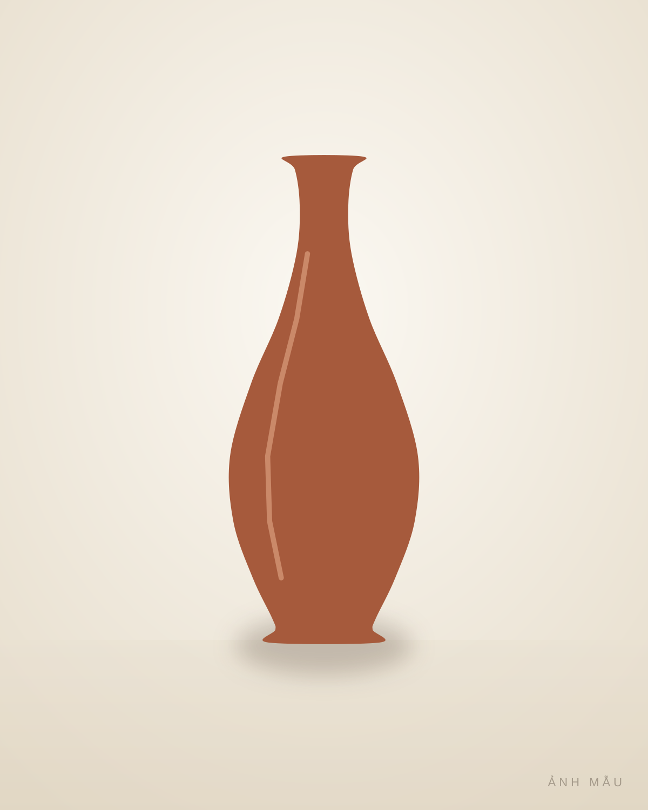
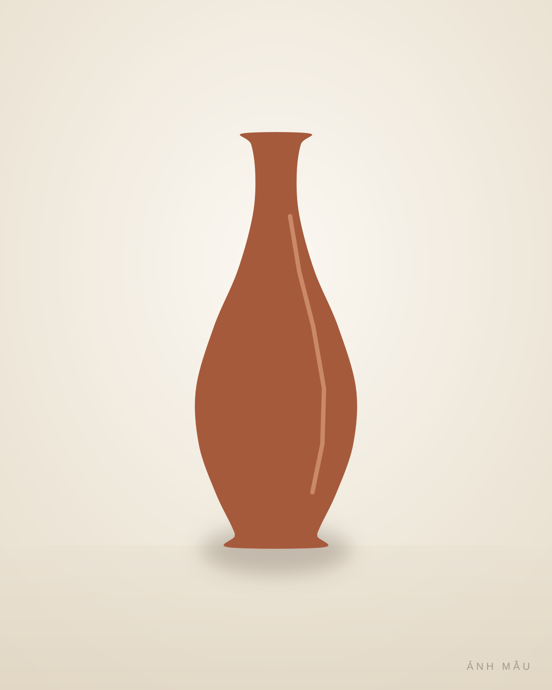
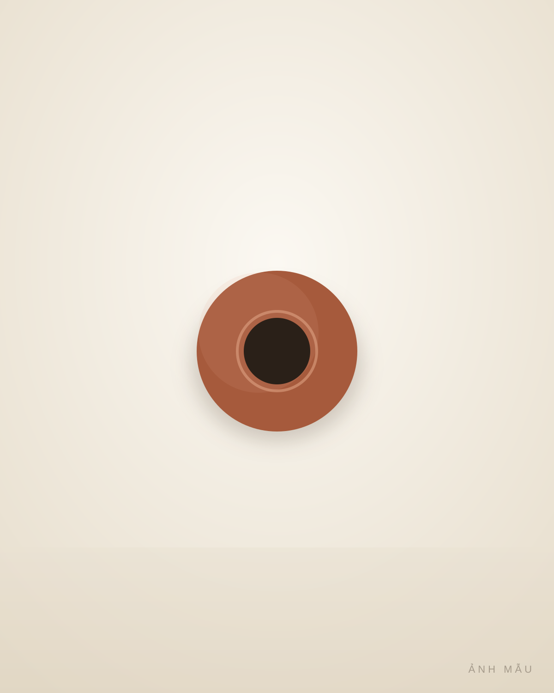
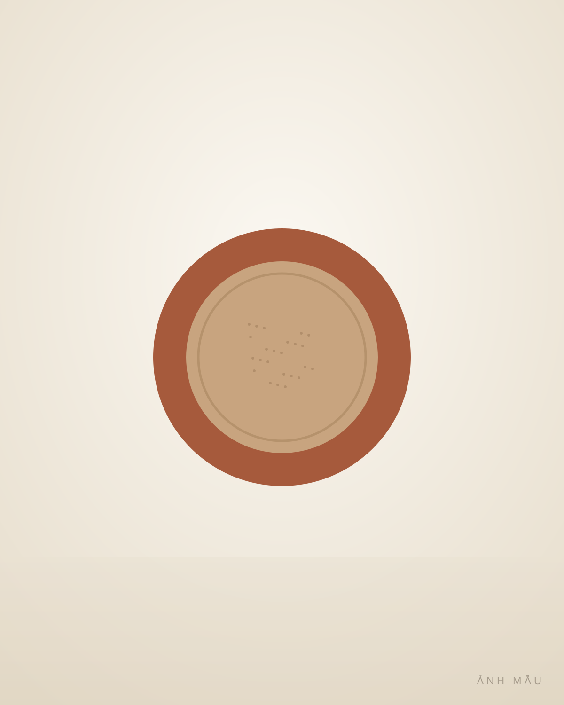
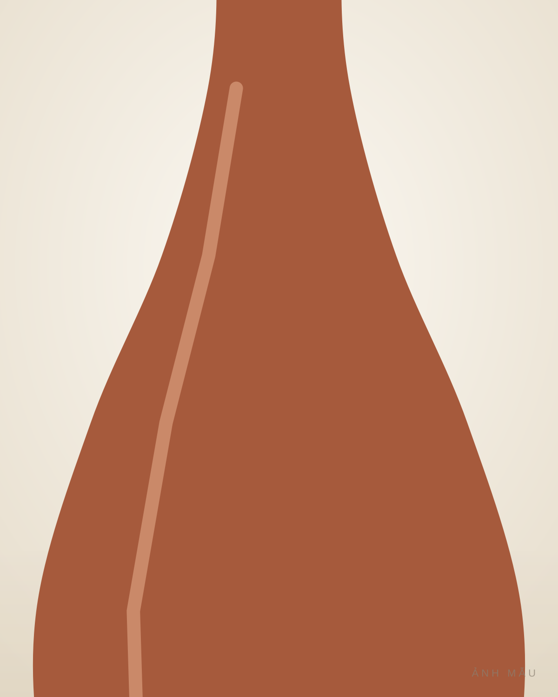
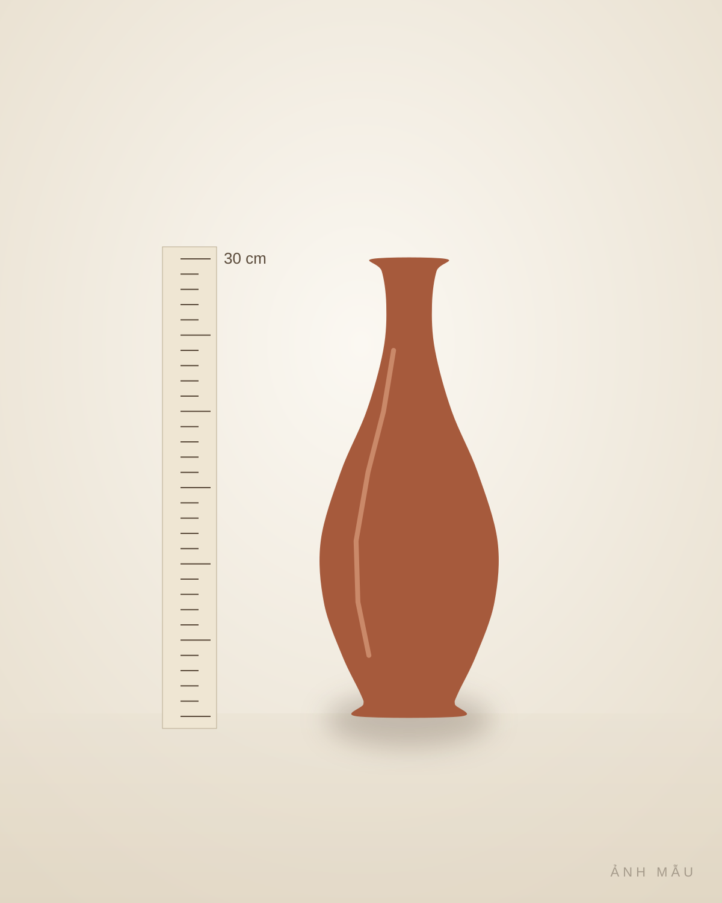

1 / 6
Kích thước
Cao 30 cm · Miệng 6 cm · Đáy 10 cm · Nặng 1,2 kg
Tình trạng
Nguyên vẹn
Không sứt, không nứt, không hàn vá.
Về kho
Anh Thuần mua của một người làm gốm ở Hội An năm 2021.
Năm ghi ở đây là năm kho mua vào, không phải năm làm ra món.
Câu chuyện
Đất nung đỏ không men, mặt đất mịn, tiếng gõ đanh. Mộc mạc, ấm màu.
Gói và gửi
Giấy lụa, xốp hơi, hộp trong hộp; gửi có mã theo dõi. Món đến tay khác mô tả thì gửi lại, kho hoàn tiền. Đọc cách mua →
Có thể anh chị thích